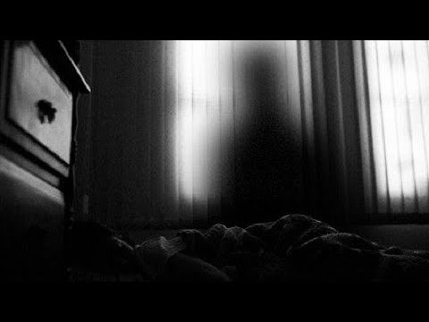

La Sombra que Aprende Tu Rutina

La leyenda cuenta que existe una sombra que aparece al azar en la vida de una persona.
No hace nada.
Solo observa desde rincones, esquinas o reflejos.
Cada día aprende un poco más:
A qué hora duermes.
Qué ruta tomas.
Qué odias.
Qué temes.
Cuando finalmente sabe todo, se sienta en el borde de tu cama. Solo una vez.
Y luego desaparece para siempre.
Pero quienes la han visto dicen que ese no es el final.
Es solo el aviso de que algo más viene detrás de ella.